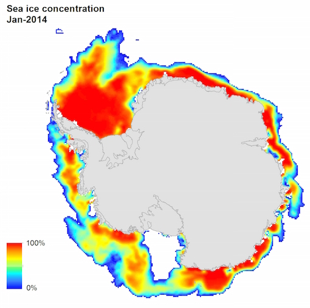

Introduction
This exercise presents a method to calculate sea ice extent from sea ice concentration data, using ArcGIS.
The exercise will begin by introducing a chain of operations to go from reading in the sea ice concentration data, to outputting a calculation of the area. It will first demonstrate this on one single band raster dataset.
The operations will be executing using the Python prompt in ArcGIS Desktop.
It will go on to show how to perform the same commands on any number of datasets.
Learning outcomes
GIS based functions
- Raster conditional statements
- Awareness of choosing correct projections
- Area calculations
- Raster to vector conversions
Datasets
- Working with high temporal resolution data
- Gain an understand for available data on sea ice derived from remote sensing instruments
Coding / Scripting
- An introduction to scripting in ArcGIS using ArcPy (Python library).
Tools required
ESRI ArcGIS 10, 10.1, 10.2 or ArcGIS Pro with Spatial Analyst extension
What is sea ice and why is it important
Sea ice is literally frozen sea water. Monitoring how the extent changes over time can provide indications of how climate change is effecting the polar regions.
Here are some links to learn more about sea ice.
- All about sea ice by NSIDC
- A short video constrasting Arctic and Antarctic sea ice trends
- View Sentinel-1 SAR imagery and see what current sea ice conditions are like in the Antarctic
- Polar bear habitats
- More on Arctic Sea Ice
The data source
For this exercise, we will be using passive microwave radiometer data, from a continuous dataset that goes back to 1979.
Objects on the earths surface emit microwave radiation at relatively low energy levels. The structure of ice typically emits more microwave radiation than the surrounding liquid water in the sea. Therefore, microwave radiometers can be used to detect the presence of sea ice.
One of the output data products provided by the National Snow and Ice Data Centre (NSIDC) is daily and monthly sea ice concentration rasters that are available from 1979 to present.

To find out more information, or to access the raw data, visit the data source webpages.
Sea ice extent is monitored and calculated on a daily basis by the NSIDC using this data and the output of this is the Sea Ice Index. The convention is that any cell within the sea ice concetration grids that is above 15% is classed as ice covered and therefore is counted towards the sea ice extent calculation.
We will be using the monthly sea ice concetration data from 2014 to see how it is possible to calculated sea ice extent using ArcGIS.
Project setup
Create a working directory.
You may optionally wish to seek out Antarctic coastline data from the Antarctic Digital Database.
Download the sea ice concentration data from here. Unzip the
data_monthly.zipdirectory into the working directory.Open ArcMap.
Using ArcCatalog, create two file geodatabases in the working directory called
antarctic-sea-ice.gdbandantarctic-sea-ice-scratch.gdb.Open up the Python prompt and type the following:
arcpy.env.workspace = 'path-to-working-directory/antarctic-sea-ice.gdb'
arcpy.env.scratchWorkspace = 'path-to-working-directory/antarctic-sea-ice-scratch.gdb'
arcpy.env.outputCoordinateSystem = arcpy.SpatialReference('South Pole Lambert Azimuthal Equal Area')
arcpy.env.overwriteOutput = True
Note that path-to-working-directory should be replaced with the actual path you the working directory that was created in step number 1, ie. c:/working-dir/ or something similar.
The above commands are simply setting the processing environment for the operations that will be conducted.
arcpy.env.workspace is the default workspace that all outputs will be saved to. The arcpy.env.scratchWorkspace is for all the temporary files that ArcGIS might create during the processing.
arcpy.env.outputCoordinateSystem simply ensures that all outputs will be converted to an equal area projection,South Polar Lambert Azimuthal Equal Area. We will be calucating areas, so it is important to ensure we calculate on an equal area projection.
Finally, arcpy.env.overwriteOutput = True prevents the annoyance of having to delete outputs from the database before repeats of the same process are completed.
Extracting area of sea ice extent from one piece of data
In order to extract the sea ice extent from the dataset of sea ice concentration, we need to chain together a series of functions. To do this we will use ArcPy commands.
Before that though, choose a raster from the data_monthly directory and add it to ArcMap. For this example we will use nt_201401_f17_v1_1_s.tif (January 2014).
The workflow will be:
- Load in the raster data into an ArcPy object.
- Use raster conditional statement within the ArcGIS Spatial Analyst extension, to extract all cells that are 15% or above using a conditional statement, indicating the extent of sea ice, and output a raster mask with all sea ice cells with the value of 1.
- Convert the raster to a polygon feature class. Note, there might be more than one polygon feature.
- Total up the areas of the polygons within the feature class.
Type the following into the Python prompt:
import numpy
from arcpy.sa import *
Here we are simply importing NumPy, which is giving us some extra python functionality.
And we are importing all the ArcPy Spatial Analyst functions as well (arcpy.sa). Make sure you have this extension enabled.
seaice_raster = Raster('nt_201401_f17_v1_1_s.tif')
seaice_mask = Con(seaice_raster >= 15, 1)
seaice_mask.save('nt_201401_f17_v1_1_s_mask')In this three lines we are creating a Raster object, pulling out all the cells whose values are 15 or above to a mask object (Con(seaice_raster >= 15, 1)), and finally saving the mask object to the geodatabase.
arcpy.RasterToPolygon_conversion(seaice_mask, "nt_201401_f17_v1_1_s_mask_poly")This line converts the raster mask to a polygon feature class and saves it to the geodatabase.
area_field = arcpy.da.TableToNumPyArray("nt_201401_f17_v1_1_s_mask_poly", "Shape_Area")
total_area = area_field["Shape_Area"].sum()
print total_area
These final few lines extract all the records in the Shape_Area field of the attribute table, which is already calculated in the previous step by default. It them sums these values which give us total_area.
The result will be a printed area, a raster mask and a polygon mask.
Extracting sea ice extent from multiple grids
As mentioned above, sea ice concentration data from this dataset goes back to 1979.
Using the monthly data, we are going to calculate how sea ice extent changes over the course of 2014. We therefore need to calculate extent for 12 grids.
It's quite tedious to copy and paste the above commands in for all 12 months, so we are now going to see how we can automate this processing using some Python scripting.
The script will implement the above commands on each piece of data in turn by running a loop to iterate through each raster in turn.
Create the script
Type the following into a text editor, and save the file as extent_multiple_grid.py (NB: make sure you keep the indents, they are 4 spaces long).
import arcpy
from arcpy.sa import *
import numpy
import glob
import os
arcpy.env.workspace = 'e:/dev/antarctic-seaice-extent/antarctic_sea_ice.gdb'
arcpy.env.scratchWorkspace = 'e:/dev/antarctic-seaice-extent/antarctic_sea_ice_scratch.gdb'
arcpy.env.outputCoordinateSystem = arcpy.SpatialReference('South Pole Lambert Azimuthal Equal Area')
arcpy.env.overwriteOutput = True
data_dir = 'e:/dev/antarctic-seaice-extent/data_monthly/'
data_listing = glob.glob('{}nt_2014*.tif'.format(data_dir))
if not arcpy.Exists('extent_results'):
arcpy.CreateTable_management(arcpy.env.workspace, 'extent_results')
arcpy.AddField_management("extent_results", 'data_source', "TEXT")
arcpy.AddField_management("extent_results", 'area', "DOUBLE")
table_input = arcpy.da.InsertCursor('extent_results', ['data_source', 'area'])
for data in data_listing:
raster_name = os.path.basename(data)
raster_name = raster_name.replace('.tif', '')
seaice_raster = Raster(data)
seaice_mask = Con(seaice_raster >= 15, 1)
seaice_mask.save("{}_mask".format(raster_name))
arcpy.RasterToPolygon_conversion(seaice_mask, "{}_mask_poly".format(raster_name))
area_field = arcpy.da.TableToNumPyArray("{}_mask_poly".format(raster_name), "Shape_Area")
total_area = area_field["Shape_Area"].sum()
table_input.insertRow([raster_name, total_area])
del table_input
You will need to make a few changes to the directory paths to ensure the script is pointing to your working directory.
Then to run the script from the Python prompt, first remove all layers from the current ArcMap document and type...
execfile('path_to_working_directory/extent_multiple_grid.py')... then wait.....
You will see the extent polygons appearing one at time, once they've been calculated.
Some explanations
The script above might look a bit overwhelming. But actually there are only a few things which are additional to the commands which were typed in for one raster dataset.
-
import glob: The glob module allows us to search for certain files within a directory based on how they are named. So, we can use it to search for all geotiff files which start with
nt_2014. The output from this is a list of filesdata_listing, ie.data_listing = glob.glob('{}nt_2014*.tif'.format(data_dir))
-
import os: The os module allows us to perform file operations. We have used it in this script to select only the file name (basename) from a file path, ie.
raster_name = os.path.basename(data) -
arcpy.CreateTable_management(): Here we are creating a table in the the geodatabase to store the results from the area calculation. We are also checking that the table does not already exist before creating it, ie.
if not arcpy.Exists('extent_results'): arcpy.CreateTable_management(arcpy.env.workspace, 'extent_results') arcpy.AddField_management("extent_results", 'data_source', "TEXT") arcpy.AddField_management("extent_results", 'area', "DOUBLE")
for data in data_listing: This represents the start of the loop, which takes each file path in the
data_listinglist and performs the GIS operations on each raster file.
Final thoughts...
If this is the first time you have tried scripting, don't worry. Try things, make mistakes, break things and work out why they aren't running. Play around with different ArcPy functions and enjoy. You can't cause any damage. Final tip: watch out for typos.
What can you do from here?
Here are some ideas for ways to extend this exercise, now that you have a script for extracting sea ice extent.
Download all the monthly data from NSIDC, and run this script over the whole time series.
Download all the daily data from the timeseries and run this script over all available days, one day for each year, one month, or whatever you choose. To do this, just select the day/month/year of rasters you want by ammending this line in
area_multiple_grid.py:
# ie. 1st September for every year
data_listing = glob.glob('{}nt_????0901*.tif'.format(data_dir))
# ie. all rasters available for the year 1984
data_listing = glob.glob('{}nt_1984*.tif'.format(data_dir))
Graph out the results
Create a time attribute on the polygon features and run animations.
Calculate the extent of ice that is classified as over 50% concentration.
Reference
Cavalieri, D. J., C. L. Parkinson, P. Gloersen, and H. J. Zwally. 1996, updated yearly. Sea Ice Concentrations from Nimbus-7 SMMR and DMSP SSM/I-SSMIS Passive Microwave Data, Version 1. [indicate subset used]. Boulder, Colorado USA. NASA National Snow and Ice Data Center Distributed Active Archive Center. http://dx.doi.org/10.5067/8GQ8LZQVL0VL. [Date Accessed].